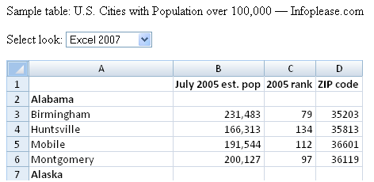

Occasionally we will want to present our Excel spreadsheet data in a web page and find the options lacking. If you have ever exported a Microsoft Office document you will know the garbage formatting instructions that get sent along with the information. How can we preserve the Excel look without the Office markup? You are in luck, we have a solution!
With a little bit of CSS magic we can in fact replicate the major Excel versions look and feel quite realistically in your plain ol' HTML tables. Not only that, but the Cogniview code magicians have given you a choice of which version of Excel you would like to emulate.
Go here to download a zip file containing the example web page (shown below) and the CSS files. There is one style sheet for each version of Excel, plus a couple of images to give the special 2007 fancy graduated shading bits.
When you open up the zip file and launch the web page, you will see we have grabbed some example data from InfoPlease.com representing the US City populations. At the top of the page is a drop-down list allowing you to select the look and feel you want to display. This drop-down changes the CSS for the shown table.
To use the CSS stylings in your own projects, first you must tell your web page which style sheet you wish to use:
link rel="stylesheet" type="text/css" href="excel-2007.css"
Next, in your table, give the class that you want to use:
<table class="ExcelTable2007">
In the above examples I have used 2007, just change those to the version you would like.
Use the TH tag for the first row of your table ("table header") and set the 'heading' class for the first column. For example:
<tr><th class="heading"> </th><th>A</th><th>B</th><th>C</th></tr>
<tr><td class="heading">2</td><td>some data</td></tr>
There we have it, a Microsoft Excel look in our web pages!
Obviously there is one major limitation of this exercise... people might think they can interact with your faux spreadsheet as if they were using Excel and be disappointed. Not much we can do about that without a whole new project, but at least this beats doing a bunch of screenshots or using the horrible Office export tools.
Yoav Ezer co-authors the technology and productivity blog Codswallop. He is also the CEO of a company that produces PDF to XLS conversion software.
For more Excel tips from Yoav, join him on Facebook or Twitter